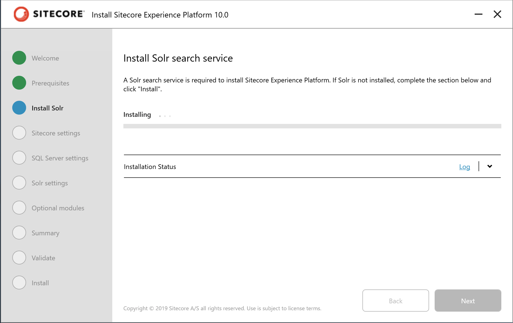

1.3. Solr のインストール¶
Sitecore Experience Platform は検索エンジンとして Solr を利用しています。インストールの前に、サービスとして起動している必要があります。
Solr をサービスとして立ち上げるためにはいくつか手順がありますが、今回はなるべく少ない手間でインストールすることができるように、PowerShell のスクリプトを利用します。
1.3.1. Java のインストール¶
今回は OpenJDK をダウンロードしてインストールします。
OpenJDK にアクセス
左側にある「Installing」のメニューをクリック
JDK 9 & Later の説明文の中にある jdk.java.net のリンクをクリック
Ready for use: JDK 13 を選択
Windows / x64 の zip ファイルをダウンロードします
{kind=link}
ダウンロードが完了した後、以下のように展開します。
ダウンロードをしたファイルを右クリック、「すべて展開」をクリックします
{kind=link}
ダイアログの「参照」ボタンをクリックして、フォルダを指定します
{kind=link}
c:\Program Files のフォルダを指定します

「新しいフォルダー」をクリックして、表示されるダイアログで「続行」をクリックします。
{kind=link}
フォルダ名として「Java」を作成して選択をします。
{kind=link}
展開をクリックすると、改めて権限に関するダイアログが表示されます。これも「続行」をクリックします。
{kind=link}
ファイルが展開されます
{kind=link}
展開が完了後、フォルダ名を jre に変更します。
{kind=link}
1.3.2. OpenSSL のインストール¶
以下のサイトから OpenSSL をダウンロードします。
{kind=link}
この文書では、Win64 OpenSSL v1.1.1d のバージョンをダウンロード、インストールしました。特別な手順はありません。最後に寄付のお願いが表示されますので、任意で寄付をしていただくと喜ばれると思います。
1.3.3. Path の調整¶
Java および OpenSSL をインストールした後、実際にコマンドラインで実行できるように Path を追加します。Path の情報はシステムから書き込むことができます。ここでは以下のような手順で進めていきます。
検索ボックスで「システムの詳細設定」と入力し、右側に表示されているツールの下の「開く」をクリックします。
{kind=link}
「詳細設定」タブにある「環境変数」をクリックします。
{kind=link}
下部にある「システム環境変数」のエリアの「新規」をクリックして新しい環境変数を追加します。
{kind=link}
変数名 JAVA_HOME、変数値に関しては「ディレクトリの参照」のボタンをクリックして、C:\Program Files\java\jre を指定して、OK をクリックします。
{kind=link}
Path を選択したあと、「編集」ボタンをクリックします。
{kind=link}
C:Program Filesjavajre と C:\Program Files\OpenSSL-Win64 を追加します。
{kind=link}
OK を押して終了します
1.3.4. PowerShell の実行権限の変更¶
Solr をインストールするために、PowerShell の実行権限を確認します。検索ボックスで「PowerShell」と入力して、Windows PowerShell のツールを「管理者として実行する」を選択して起動します。
{kind=link}
続いて、Get-ExecutionPolicy のコマンドを実行します。
Get-ExecutionPolicy
結果は以下の通りです
PS C:\Windows\system32> Get-ExecutionPolicy
Restricted
Windows 10 では標準で Restricted で設定されています。このため、通常では PowerShell のスクリプトを実行することができません（詳しくは About Execution Policies を参照）。
ポリシーを変更するためには、Set-ExecutionPolicy のコマンドで変更をすることができます。今回はローカルのファイルのみ OK ということにするため、RemoteSigned を設定します。
Set-ExecutionPolicy RemoteSigned
結果は以下の通りです。
PS C:\Windows\system32> Set-ExecutionPolicy RemoteSigned
実行ポリシーの変更
実行ポリシーは、信頼されていないスクリプトからの保護に役立ちます。実行ポリシーを変更すると、about_Execution_Policies
のヘルプ トピック (https://go.microsoft.com/fwlink/?LinkID=135170)
で説明されているセキュリティ上の危険にさらされる可能性があります。実行ポリシーを変更しますか?
[Y] はい(Y) [A] すべて続行(A) [N] いいえ(N) [L] すべて無視(L) [S] 中断(S) [?] ヘルプ (既定値は "N"): y
PS C:\Windows\system32> Get-ExecutionPolicy
RemoteSigned
PS C:\Windows\system32>
これでダウンロードをした PowerShell のファイルを実行できるようになりました。
{kind=link}
{kind=link}
{kind=link}
{kind=link}